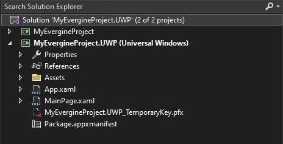

UWP Platform
Warning
The UWP platform in Evergine is now deprecated and could be removed in future releases.
Desktop and Tablets
You can add UWP as one of the platforms for your project using the Universal Windows Platform template. With this template, you can create an application that runs on devices such as PCs, tablets, or Xbox.

The project targets Windows 10 build 16299 as the minimum version, and Windows 10 build 18362 as the target version.

You can also deploy applications to HoloLens devices, as stated in the Mixed Reality section.
Prerequisites
You must install the target SDKs to build and run the application. You can find download links here.
Application Deployment
As a standard UWP application, you can deploy your application on your local Windows device, a remote device, or a physical device connected by USB to your development machine.
Mixed Reality
If you want to create an Evergine project for HoloLens, you should use the Mixed Reality template.

The project targets Windows 10 build 16299 as the minimum version, and Windows 10 build 18362 as the target version.
XR Capabilities
Evergine for Mixed Reality relies on a set of interfaces and classes defined in the Evergine.Framework.XR.* namespace:
- QR code detection with IQRCodeWatcherService.
- Spatial anchors with SpatialAnchor.
- Spatial mapping with SpatialMappingObserver and SpatialMappingSurface.
Application Deployment
In this case, there are two options for application deployment:
- Deploy in the HoloLens emulator: Before deploying, you need to install the device emulator from the official documentation page.
- Deploy on a HoloLens device: Remember that you should mark ARM64 as the active configuration to deploy an application for HoloLens 2. For more information, read the official documentation.